Continuity
Arizona is known for its dry heat. On a particular day, the temperature might rise as high as and drop down only to a brisk Figure 1 shows the function where the output of is the temperature in Fahrenheit degrees and the input is the time of day, using a 24-hour clock on a particular summer day.
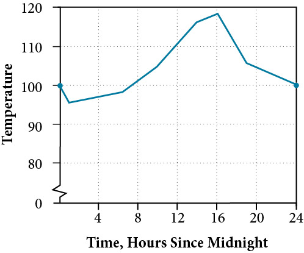
When we analyze this graph, we notice a specific characteristic. There are no breaks in the graph. We could trace the graph without picking up our pencil. This single observation tells us a great deal about the function. In this section, we will investigate functions with and without breaks.
Determining Whether a Function Is Continuous at a Number
Let’s consider a specific example of temperature in terms of date and location, such as June 27, 2013, in Phoenix, AZ. The graph in Figure 1 indicates that, at 2 a.m., the temperature was . By 2 p.m. the temperature had risen to and by 4 p.m. it was Sometime between 2 a.m. and 4 p.m., the temperature outside must have been exactly In fact, any temperature between and occurred at some point that day. This means all real numbers in the output between and are generated at some point by the function according to the intermediate value theorem,
Look again at Figure 1. There are no breaks in the function’s graph for this 24-hour period. At no point did the temperature cease to exist, nor was there a point at which the temperature jumped instantaneously by several degrees. A function that has no holes or breaks in its graph is known as a continuous function. Temperature as a function of time is an example of a continuous function.
If temperature represents a continuous function, what kind of function would not be continuous? Consider an example of dollars expressed as a function of hours of parking. Let’s create the function where is the output representing cost in dollars for parking number of hours. See Figure 2.
Suppose a parking garage charges $4.00 per hour or fraction of an hour, with a $25 per day maximum charge. Park for two hours and five minutes and the charge is $12. Park an additional hour and the charge is $16. We can never be charged $13, $14, or $15. There are real numbers between 12 and 16 that the function never outputs. There are breaks in the function’s graph for this 24-hour period, points at which the price of parking jumps instantaneously by several dollars.
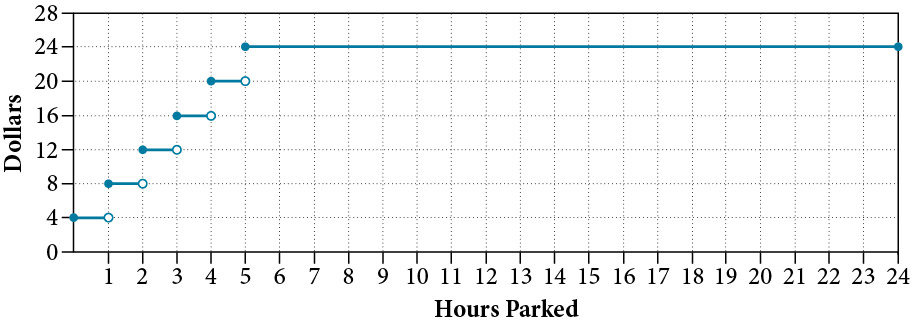
A function that remains level for an interval and then jumps instantaneously to a higher value is called a stepwise function. This function is an example.
A function that has any hole or break in its graph is known as a discontinuous function. A stepwise function, such as parking-garage charges as a function of hours parked, is an example of a discontinuous function.
So how can we decide if a function is continuous at a particular number? We can check three different conditions. Let’s use the function represented in Figure 3 as an example.
Condition 1 According to Condition 1, the function defined at must exist. In other words, there is a y-coordinate at as in Figure 4.
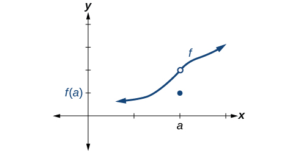
Condition 2 According to Condition 2, at the limit, written must exist. This means that at the left-hand limit must equal the right-hand limit. Notice as the graph of in Figure 3 approaches from the left and right, the same y-coordinate is approached. Therefore, Condition 2 is satisfied. However, there could still be a hole in the graph at .
Condition 3 According to Condition 3, the corresponding coordinate at fills in the hole in the graph of This is written
Satisfying all three conditions means that the function is continuous. All three conditions are satisfied for the function represented in Figure 5 so the function is continuous as
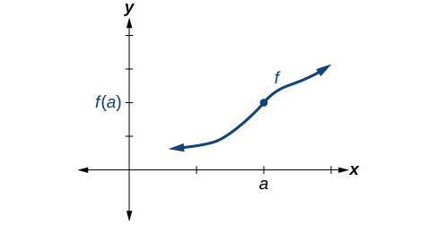
Figure 6 through Figure 9 provide several examples of graphs of functions that are not continuous at and the condition or conditions that fail.
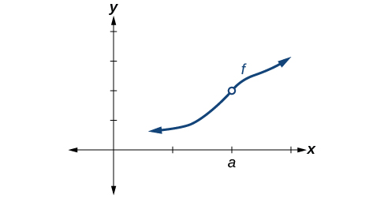
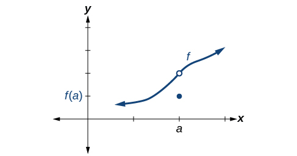
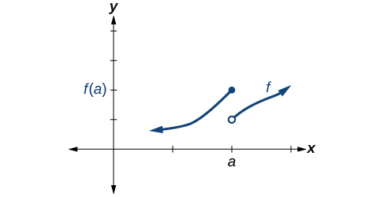
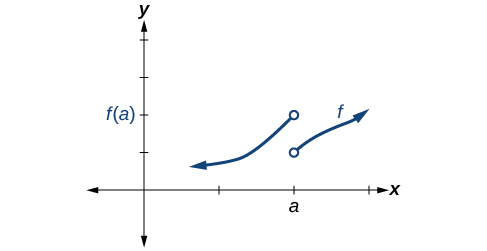
Identifying a Jump Discontinuity
Discontinuity can occur in different ways. We saw in the previous section that a function could have a left-hand limit and a right-hand limit even if they are not equal. If the left- and right-hand limits exist but are different, the graph “jumps” at . The function is said to have a jump discontinuity.
As an example, look at the graph of the function in Figure 10. Notice as approaches how the output approaches different values from the left and from the right.
Identifying Removable Discontinuity
Some functions have a discontinuity, but it is possible to redefine the function at that point to make it continuous. This type of function is said to have a removable discontinuity. Let’s look at the function represented by the graph in Figure 11. The function has a limit. However, there is a hole at . The hole can be filled by extending the domain to include the input and defining the corresponding output of the function at that value as the limit of the function at .
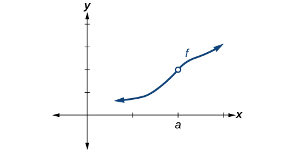
Identifying Discontinuities
Identify all discontinuities for the following functions as either a jump or a removable discontinuity.
- ⓐ
- ⓑ
Solution
- ⓐ
Notice that the function is defined everywhere except at
Thus, does not exist, Condition 2 is not satisfied. Since Condition 1 is satisfied, the limit as approaches 5 is 8, and Condition 2 is not satisfied. This means there is a removable discontinuity at
- ⓑ
Condition 2 is satisfied because
Notice that the function is a piecewise function, and for each piece, the function is defined everywhere on its domain. Let’s examine Condition 1 by determining the left- and right-hand limits as approaches 2.
Left-hand limit: The left-hand limit exists.
Right-hand limit: The right-hand limit exists. But
So, does not exist, and Condition 2 fails: There is no removable discontinuity. However, since both left- and right-hand limits exist but are not equal, the conditions are satisfied for a jump discontinuity at
Recognizing Continuous and Discontinuous Real-Number Functions
Many of the functions we have encountered in earlier chapters are continuous everywhere. They never have a hole in them, and they never jump from one value to the next. For all of these functions, the limit of as approaches is the same as the value of when So There are some functions that are continuous everywhere and some that are only continuous where they are defined on their domain because they are not defined for all real numbers.
Determining Whether a Piecewise Function is Continuous at a Given Number
Determine whether the function is continuous at
- ⓐ
- ⓑ
Solution
To determine if the function is continuous at we will determine if the three conditions of continuity are satisfied at .
- ⓐ
Condition 1: Does exist?
Condition 2: Does exist?
To the left of to the right of We need to evaluate the left- and right-hand limits as approaches 1.- Left-hand limit:
- Right-hand limit:
Because does not exist.
There is no need to proceed further. Condition 2 fails at If any of the conditions of continuity are not satisfied at the function is not continuous at
- ⓑ
Condition 1: Does exist?
Condition 2: Does exist?
To the left of to the right of We need to evaluate the left- and right-hand limits as approaches- Left-hand limit:
- Right-hand limit:
Because exists,
Condition 3: Is
Because all three conditions of continuity are satisfied at the function is continuous at
Determining Whether a Rational Function is Continuous at a Given Number
Determine whether the function is continuous at
Solution
To determine if the function is continuous at we will determine if the three conditions of continuity are satisfied at
Condition 1:
There is no need to proceed further. Condition 2 fails at If any of the conditions of continuity are not satisfied at the function is not continuous at
Determining the Input Values for Which a Function Is Discontinuous
Now that we can identify continuous functions, jump discontinuities, and removable discontinuities, we will look at more complex functions to find discontinuities. Here, we will analyze a piecewise function to determine if any real numbers exist where the function is not continuous. A piecewise function may have discontinuities at the boundary points of the function as well as within the functions that make it up.
To determine the real numbers for which a piecewise function composed of polynomial functions is not continuous, recall that polynomial functions themselves are continuous on the set of real numbers. Any discontinuity would be at the boundary points. So we need to explore the three conditions of continuity at the boundary points of the piecewise function.
Determining the Input Values for Which a Piecewise Function Is Discontinuous
Determine whether the function is discontinuous for any real numbers.
Solution
The piecewise function is defined by three functions, which are all polynomial functions, on on and on Polynomial functions are continuous everywhere. Any discontinuities would be at the boundary points, and
At let us check the three conditions of continuity.
Condition 1:
- Left-hand limit:
- Right-hand limit:
Because ,
Condition 3:
Because all three conditions are satisfied at the function is continuous at
At let us check the three conditions of continuity.
- Left-hand limit:
- Right-hand limit:
Because , so does not exist.
Because one of the three conditions does not hold at the function is discontinuous at
Analysis
See Figure 13. At there exists a jump discontinuity. Notice that the function is continuous at
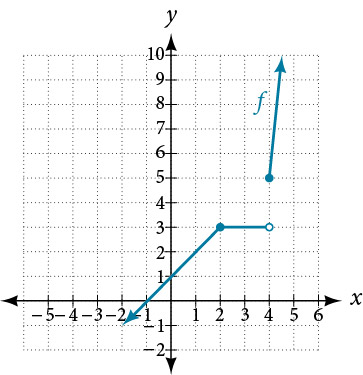
Determining Whether a Function Is Continuous
To determine whether a piecewise function is continuous or discontinuous, in addition to checking the boundary points, we must also check whether each of the functions that make up the piecewise function is continuous.
Determining Whether a Piecewise Function Is Continuous
Determine whether the function below is continuous. If it is not, state the location and type of each discontinuity.
Solution
The two functions composing this piecewise function are on and on The sine function and all polynomial functions are continuous everywhere. Any discontinuities would be at the boundary point,
At let us check the three conditions of continuity.
Condition 1:
Because all three conditions are not satisfied at the function is discontinuous at
Analysis
See Figure 14. There exists a removable discontinuity at thus the limit exists and is finite, but does not exist.
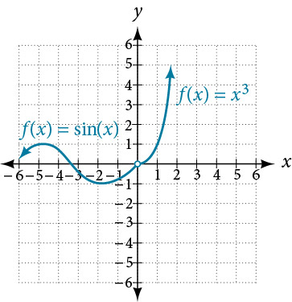
Key Concepts
- A continuous function can be represented by a graph without holes or breaks.
- A function whose graph has holes is a discontinuous function.
- A function is continuous at a particular number if three conditions are met:
- Condition 1: exists.
- Condition 2: exists at
- Condition 3:
- A function has a jump discontinuity if the left- and right-hand limits are different, causing the graph to “jump.”
- A function has a removable discontinuity if it can be redefined at its discontinuous point to make it continuous. See Example 1.
- Some functions, such as polynomial functions, are continuous everywhere. Other functions, such as logarithmic functions, are continuous on their domain. See Example 2 and Example 3.
- For a piecewise function to be continuous each piece must be continuous on its part of the domain and the function as a whole must be continuous at the boundaries. See Example 4 and Example 5.
Section Exercises
Verbal
State in your own words what it means for a function to be continuous at
Solution
Informally, if a function is continuous at then there is no break in the graph of the function at and is defined.
State in your own words what it means for a function to be continuous on the interval
Algebraic
For the following exercises, determine why the function is discontinuous at a given point on the graph. State which condition fails.
Solution
discontinuous at ; does not exist
Solution
removable discontinuity at ; is not defined
Solution
Discontinuous at ; but which is not equal to the limit.
Solution
does not exist.
Solution
. Therefore, does not exist.
Solution
. Thus does not exist.
Solution
,
Therefore, does not exist.
Solution
is not defined.
Solution
is not defined.
Solution
is not defined.
For the following exercises, determine whether or not the given function is continuous everywhere. If it is continuous everywhere it is defined, state for what range it is continuous. If it is discontinuous, state where it is discontinuous.
Solution
Continuous on
Solution
Continuous on
Solution
Discontinuous at and
Solution
Discontinuous at
Solution
Continuous on
Solution
Continuous on
.
Solution
Continuous on .
Determine the values of and such that the following function is continuous on the entire real number line.
Graphical
For the following exercises, refer to Figure 15. Each square represents one square unit. For each value of determine which of the three conditions of continuity are satisfied at and which are not.
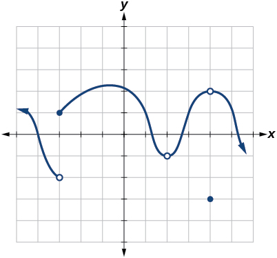
Solution
1, but not 2 or 3
Solution
1 and 2, but not 3
For the following exercises, use a graphing utility to graph the function as in Figure 16. Set the x-axis a short distance before and after 0 to illustrate the point of discontinuity.
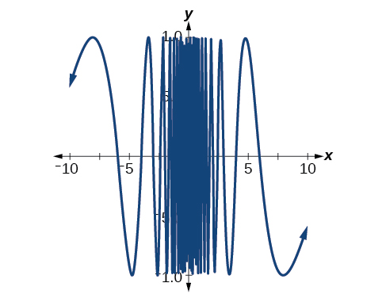
Which conditions for continuity fail at the point of discontinuity?
Evaluate
Solution
is undefined.
Solve for if
What is the domain of
Solution
For the following exercises, consider the function shown in Figure 17.
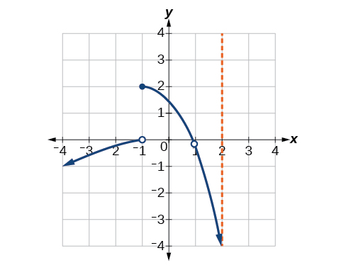
At what x-coordinates is the function discontinuous?
What condition of continuity is violated at these points?
Solution
At the limit does not exist. At does not exist.
At there appears to be a vertical asymptote, and the limit does not exist.
Consider the function shown in Figure 18. At what x-coordinates is the function discontinuous? What condition(s) of continuity were violated?
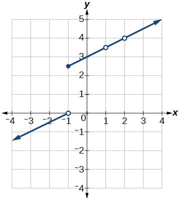
Construct a function that passes through the origin with a constant slope of 1, with removable discontinuities at and
Solution
The function is graphed in Figure 19. It appears to be continuous on the interval but there is an x-value on that interval at which the function is discontinuous. Determine the value of at which the function is discontinuous, and explain the pitfall of utilizing technology when considering continuity of a function by examining its graph.
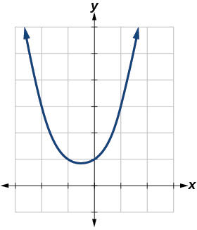
Find the limit and determine if the following function is continuous at
Solution
The function is discontinuous at because the limit as approaches 1 is 5 and
The graph of is shown in Figure 20. Is the function continuous at Why or why not?
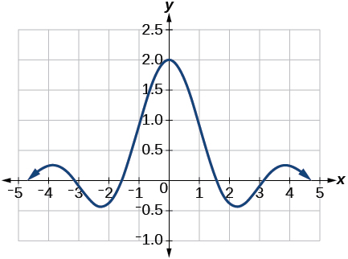
Analysis
See Figure 12. Notice that for Condition 2 we have
At there exists a removable discontinuity. See Figure 12.
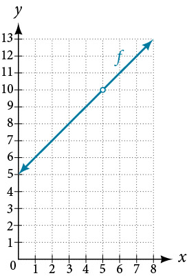